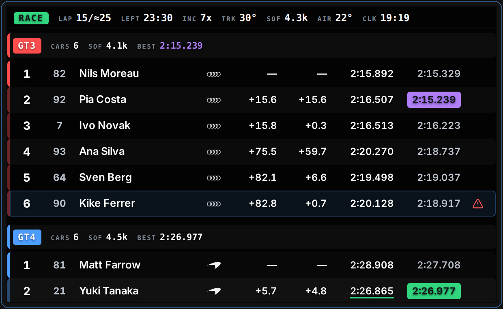
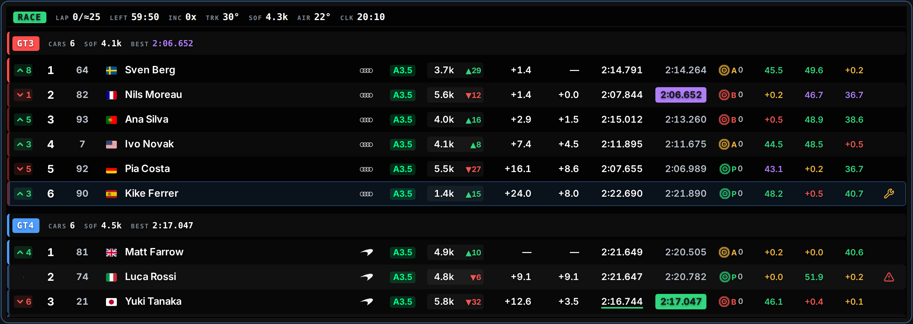
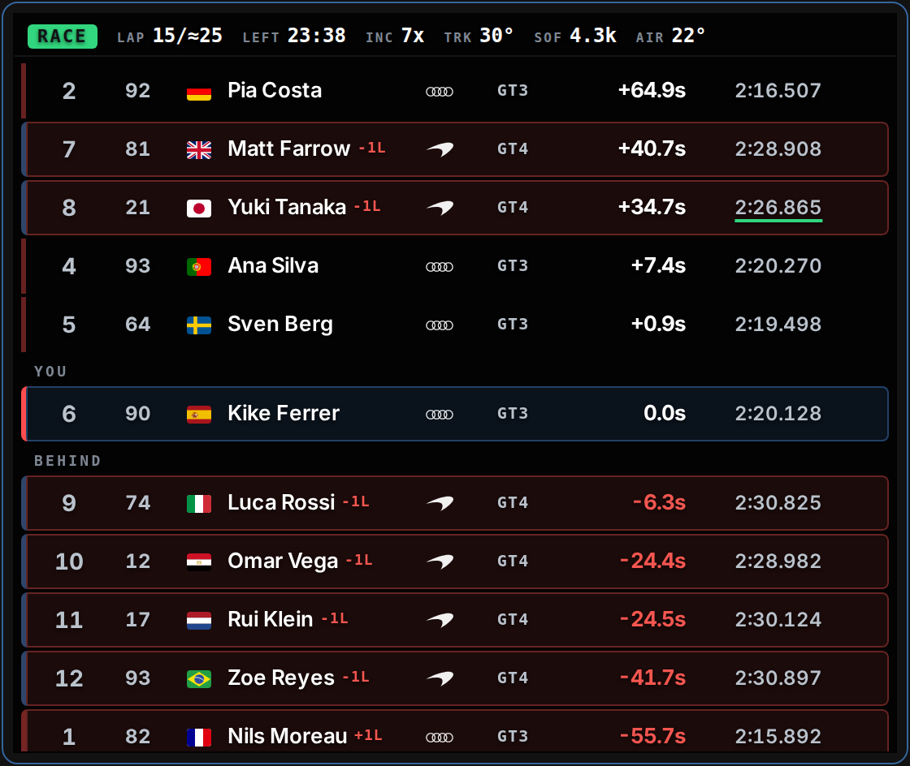
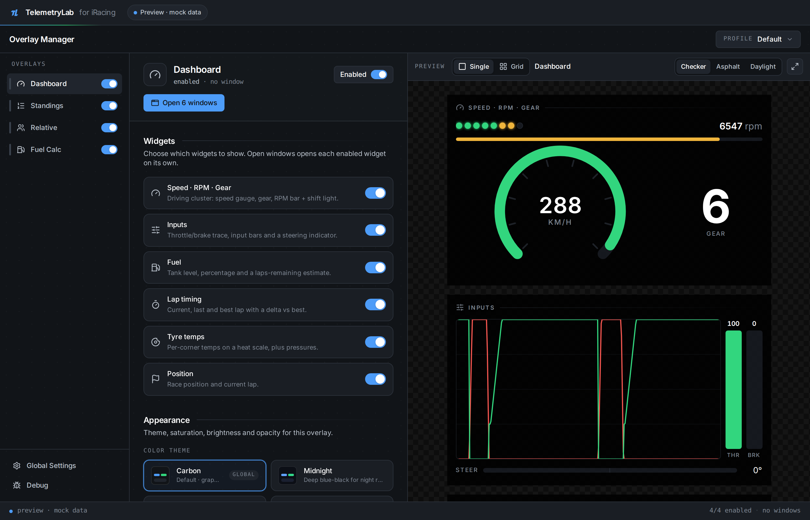

Read the field without looking.
TelemetryLab is a timing and telemetry overlay for iRacing. Multi-class standings, an on-track relative, fuel strategy and a driving cluster — each one its own window, sitting over the game.
Free. Windows only.

The whole field, grouped by class.
Each class opens with its own band — how many cars are in it, its strength of field, and the lap that leads it. Underneath, the running order with everything you would otherwise be squinting for.
- Gap to the class leader, and the interval to the car directly ahead
- Sector times and deltas, graded against your own best and the field's
- iRating with a live projected change, licence class and safety rating
- Tyre compound and laps on the set; pit and off-track state

Who is actually coming.
The relative sorts by time on track, not by position — so it shows the cars you are about to meet, whatever lap they are on. Gaps are signed and live. A closing indicator fires when a faster car is catching you, and turns red when that car is from another class.

The stop, before you need it.
Fuel strategy works from your own measured burn, not from a number you typed in before the race. It gives you the pit window, the lap it recommends, and — when the two disagree — how many laps short you are at the pace you are actually driving.
- Consumption per lap, sampled live, with laps of fuel remaining
- A pit window and a recommended lap, both recomputed every lap
- A fuel-save target when finishing on what is in the tank is close

Configured once, then left alone.
The timing screens carry no controls at all. Nothing on them can be aimed at, because while you are reading them your hands are busy. Everything configurable lives in the manager instead, next to a live preview of the overlay it is changing.
- Every overlay is a separate window — place, resize and theme it on its own
- Pick which timing columns you want; the rest drop out as the window narrows
- Four themes, and a mock-data mode that runs the whole UI without a sim

What every column is telling you.
The timing screen is dense on purpose — it is read in peripheral vision, at speed. Every column above is in this table, and colour carries exactly one meaning throughout.
| Column | Reads | Colour |
|---|---|---|
| POS | Position in class, or overall when the field is ungrouped | — |
| GAP | Seconds behind the class leader, or laps down | — |
| INT | Seconds to the car directly ahead of you in class | — |
| LAST | Your last completed lap, ruled when it grades | green rule personal best · purple leads the session |
| BEST | Fastest lap of the session for that car | filled when it leads the class |
| iR | iRating, with a projected change for this race | ▲ gain · ▼ loss — an estimate |
| LIC | Licence class and safety rating | iRacing's own licence colour |
| TYRE | Compound, and laps on the current set | One colour per compound |
| S1–S3 | Sector time when it is a best, the delta when it is a loss | purple · green · amber · red |
| Field | Reads | Colour |
|---|---|---|
| RACE | Session type, filled with the flag currently flying | green · yellow · red |
| LAP | Laps done over the race distance — projected in a timed race | — |
| LEFT | Time, or laps, left in the session | — |
| INC | Your incident points this session | amber then red as a limit comes into sight |
| TRK · AIR | Track and air temperature | — |
| SOF | Strength of field | — |
| CLK | Local time, for when the stint has stopped meaning anything | — |
Every field above appears in the captures on this page
What it needs.
- Windows, and iRacing
-
The bridge reads iRacing's shared memory, which exists only on
Windows. The installer is a signed-by-nobody
.msi— Windows will tell you so, and it is right to. - No sim to hand?
- Turn on mock data in the manager's global settings and the whole interface runs on synthetic telemetry — a full multi-class field, no bridge required. Every capture on this page was taken that way.
- Four windows, one manager
- Standings, relative, fuel and the driving cluster each open as their own always-on-top window. Place, size and theme them once in the manager; the overlays themselves carry no controls at all.